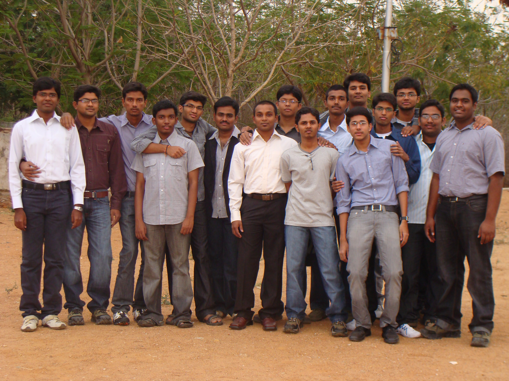
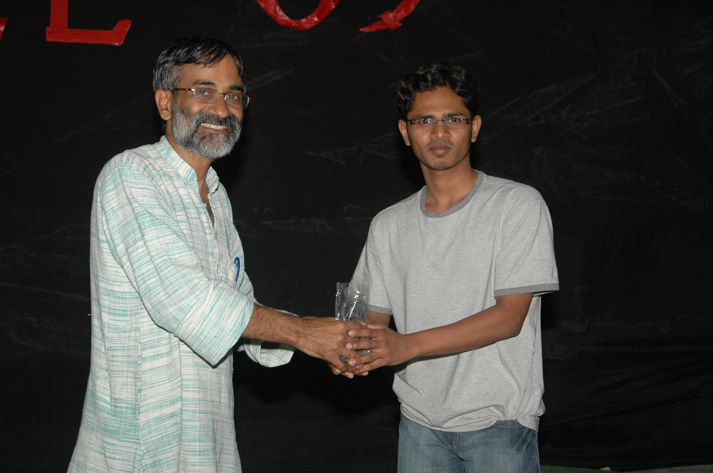

The Yearbook - Commemorating 2005-09!
Samuel John's profile information
Name - Samuel JohnBirthday - August 18
Email - samueljohnksj@gmail.com
Address - s/o John K , 39th division ,Eluru , WG dist, AP -534005
Phone - 9290655669
Webpage - Link
Hobbies - exatracting fun out of any context , reading articles from net , photography , drums [Rhythm Pads , Congo , Bonga]
WishList - set up a music recording studio , leave this clg with 6.5 cgpa :)
Memorabilia - kicking and spanking a** for all bdays and finally leg injury, endless chatter targeting everyone finally....
What would you want to be remembered as - sam , samuels , samjohn
Future Plans - if possible will do mba , soon after exiting from clg --- will catch wat i missed here
Testimonials written by Samuel John
Samuel John's Album

Set

{kind=link}
4 dudes missing

{kind=link}
BTech--Farewell
Testimonials
Vamshi Velagapuri wrote-neeku antha balam ekkada nundi vasthundo teliadhu ra mama naku...bday bumps..ayna bottom hand sixes ayna..antha speed ga blowing cheyyadam ayna..neeku

all the best for ur future ra...
keep in touch,
nee vam

harshita wrote-
nuvvu kuda chaala mass
 ...nee status mesgs gurinchi cheptaru maa ammailu ...stage ekki butulu matlade dhairyam neeke undi le.....anywayz all the best for ur future...hope u do well
...nee status mesgs gurinchi cheptaru maa ammailu ...stage ekki butulu matlade dhairyam neeke undi le.....anywayz all the best for ur future...hope u do wellharshita wrote-
oa na


Karan wrote-
John, haven't interacted much with him- but will remember him as this rebel kind of a guy. And of course, cricket in first year in front of the library- He was a very good player back then

The other thing which I'd remember- the brutality with which he hits people on their birthdays in the OBH common garden
. OMG, you gotta see that!
All the very best in life, mate!
Satyanarayana Koneru wrote-
john mama !
naku last two yrs ga baga telusu ...
siva reddy lanti kasi galla room lo padi kooda den**povachani prove chesadu john gadu .. anduku neeku
janalu veedu unnappudu control lo untaru veedu ekkada chestado ani ... veedu nenu kalisi bday celebrations ki digamante vadu edavalsinde aa roju .. inka tonic esadante manishi kadu asalu .. felicity lo tonic esi maku ucha poyinchadu asalu !
veedu kooda nalage single shot selection ..dell ki .. first interview lo job kottesadu .. keka mama! emanna organise cheyyamante onti meeda gudda aagadu edava ki ...music too much organise chesadu but ma**a padipoyindi andariki course grade ki
 movie freak laptop konnaka 2nd yr ke almost all movies choosesadu lan lo unnavi ...
movie freak laptop konnaka 2nd yr ke almost all movies choosesadu lan lo unnavi ...
elanti help anna chesthadu frnd ki .. eppudu navvuthu navvisthu untadu ! veedu unte bayamkaram ga time pass avudhi ... batch trip keka puttiddam mama !
ma duggi gadini ela barithavo gani ...
all the best ra john !
ur satya
Nagarjuna Pavan Kumar G wrote-
John-fun loving and fun sharing guy....
veedito unte boldanta fun...
alaa alaa veltuu veltuu veellu oka group unte velli koorchundipotaanu...veella kaburlu vintuu..nenu konni add chestuu...
veedu manchi bowler...manchi manishi...
DELL lo offer kottesaav mama...kummey...
nuvvu aa roju interview nunchi vacchi express chesina danni batti 200% neeku vastundani anukunnaam raa...vacchesindi...inkaa chelaregu asalu...
naaku veenni choosinappudu kallemmata neellu tirigina incident veediki accident ayina roju...
moham nindaa debbalu...chaalaa disturb ayyaanu nenu aa roju...god gave you great energy raa...you recovered very quickly...i was very happy for you...
stay in touch mams...
all the very best...
Nagarjuna
Satish Varagani wrote-
john..veedito vunte naku time ye teledu ..i really loved funny discussions with him while walking around the campus ..inka veedu vizag trip lo chesina hadavidi asala ...
asalu nuvvu sms lu ekkada nunchi pamputava mama nijam ga avi keka..nee sms lu ni neneppudu delete cheyanu ra bore kottinapudalla malli mallii chaduvutunatanu..
mama nuvvu ekkada taggamaku ...all the best for ur future
S.Rama Krishna Raju wrote-
John- A typical friend who is so caring for evry1. kani evaridhaina budday ochindhante chalu.. chirretthina chiruthapuli la maripothadu..
Comment cheyyadam lo no:1. Chudadaniki mamuluga kanipinchina, evaru oohinchaleni talents unnayi..
All the best ra maamaaa..
Lydia Manikonda wrote-
n yeah forgot one more thing....he helped us a lot during the Christmas carols and thanks a lot for all the help
Lydia Manikonda wrote-
manishini chusthe asalu chaala calmga untadu n kanpadathadu kaani asalu ala kaadhu anpaduthundhi (sorry if am wrong)

papam eppudu first yr lo system kavalanna ventane vellipoyevadu. class lo pakkana seat kabatti Prof eppudayina ekkuva sepu gaani lekunte class bore kottisthunnappudu gaani asalu full thittukuntunde vaadu
and asalu picha coolga eppudu tension padinatte nenu chudaledhu and naaku asalu gurtheledhu eppudu nenu thana notes teeskunedanno adagakunda
neways hope all ur wishes cum true n all da best!
Ganesh wrote-
Veedini interlo almost kalisaanu....a vishyam ikkadi vachaka telisindi.
Chalaki budatadu, epudu chetilu ekkado vuntayi.
B`days apudu veedolekapothe asalu hadavide vundadu.
manchi manchi jokes forward chestaadu
cheppadu kaani chala korikalu vunnay korrodiki
Vellelopu nee korikalanni teeralani prathisthu....Gani
shashank lagishetty wrote-
johnny johnny
entra p***a
mellaga kottura
no ra p***a
kali tho kodthava
no p***a
hammayya aithe kottu
phat phat phat!!!
Sam John, probably the best contender for shortest and smartest guy in IIIT. Always cheerful, greeting with a smile etc.. etc...are admirable. kani aa bday bumps entra item, antha gattiga kodithe ratri pandukovala vadha???!!! EE Aug 18th ki choosukundam ra nee prathapamu naa prathapamu. Intlo abadhalu adadam nerchukovali(leg copy)!!!
All the best mama.
M.Bhanu Chandra wrote-
Jolly person , evarimeeda counter veyyalnte konni special words tho daaniki colors add chesi vesthadu. hehe njoyed them ra.
A good cric player , six's baa koduthadu
chudtaani ki pottiga piilodi la untaadu kaani abbo foot ball grn leg side road meeda padesthadu ball ni -- keka
Quite a bit of a Photographer.
All the best ra
Kiran Neelisetty wrote-
pottolantha gattollu antaru...veedu nijamgane gatti pidugu...
I know about him when he comes to play cricket...
fast bowling veydanki height undali ane theorem ni disprove cheyadanki veedoka example...inka batting vishayam ki vasthe...ball bat ki tagilthe six a..kakapothe rare ga tagilidhi..
evardi aina bday ante chaallu..vachi G**** pagalakodatadu...anduke papam last bday vadiki pack aindhi..
thats all i could make about him from the very few encounters with him
I wish u a very bright future raa..tc
Mahesh Raja wrote-
Simply ga cheppalante Johny rocks ..
he is a happy go lucky guy always having fun.
ee madhyane maa vaadu DELL lo place ayyi racha puttinchadu. I can't forget all the moments that i have with all of our batch mates. Looking forward for ur participation in our batch trip ..

ALL the best Johny
Raja sekhar reddy A wrote-
john ante karuddi janalaki , inthe kada unnadu anakandi , dialogues racha racha ga untayi , kinda janga testi chadavandi( simhaswapnam) . manchi friend. rebel rebel ga untundi veedu unte ,
satya janga wrote-
"Pottodini pettilo pettina aagadu"
john gaadu ante antha keka mari. Ammayilaki simha swapnam. veediki chaala bhayapadatharu anta (siva reddy cheppadu vaadiki evaro chepparu).
and luckiest bi***. manchi job kottesadu.
Birth day bumps daggara veedi hadavidi abbo inka cheppanakkara ledhu.
paiki ela vunna veddu chala sensitive.
I dont want to miss u dude..
Yours,
Janga.
Bhanukiran Vinzamuri wrote-
john gaadu asalu veedu. Veedu manshi ni deng*** modaledite chaalu inka vaadu recover aye sarki varam patudi. Oka range talent in giving orkut comments and satires
. Fel 2k9 lo John mama naaku spl dose ichevu kada asalu abbo cannot forget . But apart from that is a nice guy to talk and is a jovial personality.
PS Nuvvu leni batch trip e ledu mama. Racha putinchali asalu.
Srirang Ranjalkar wrote-
My inspiration for Racha. Veedini chusi oke oka chala important fact of life telusukunna. "Height is never a matter of concern ani". You can always do racha no matter where you are, what your surroundings are.
 . Nee energy levels ki
. Nee energy levels ki
Veedu counter vesadante inka musukovalsinde. Maatladithe konda avutaru, maatladaka pote konda avtuaru. Babu.. neekunna ee counters talent ki oka
.
Baita chudataniki inta hard core la untademo kani, lopalanundi chala soft. Manusu chala manchidi. Help cheyyataniki eppudu ready ga untadu. Believes in God. Last year Christmas celebrations kosam veedu chesina hard work ki
. Every year new years day ki church ki veltadu so that the year starts on a good note.
Ante kakunda veediki self controlling power kuda chala ekkuva. Movies chudakudadu anukunte one month full oka movie kuda chudakunda unnadu. Ade nenaiunte naaku assalu kudiredi kaadu. Andariki ila self control power undadu mama. ee vishayaniki vaste nuvvu racha asalu.

Nee bowling ki oka
.
But at times veedu naaku ardham kaadu. Chala friendly ga untunnada, sarcastic ga untunnada, dobbutunnada, support chestunnada assalu ardham kadu.
Veedi prati comment lo "item", "p**", "d**" ivi kachitanga vastayi. konni naaku ardham kaavu but migitavi comedy ga untai chadavataniki.

IIIT lo kumminattu DELL lo kuda kummutu, pandaga chestuu
untav ani hope chestunna. All the best raa.
Love
DJ ranga.
G. Rohit Bharadwaj wrote-
nenu first year lo cricket adina (opp library building) koddi mandilo vedu okadu. Appudu parichayam aindi vedu kirku. Funny, witty, I-care-none attitude tho doorukupotunnadu. Good at heart and always ready to help his friends. chakkaga boothulu matladutooo andari meeda counters vestoo veedu matrame cheyyagalige variety panulu chestoo.. navvutoo navvistoo.. ala hayiga kaalam gadipesadu...
all the best ra,
touch lo undu
cheers,
rohit
Satish Chandra Prasad wrote-
mama asalu picha rebel candet , veedu gurinchi enta cheppina takkuve , but i'll try ma level best.
I'st year lo dadapu class lo naa position lo unaa ekaika vyakti ,naakuna ekaika todu 1'st year lo
tarvata iddari tracks separate ayyayi , aina ye occasion aina veedu lekapote sarada vundadu thnx fr da fun mama
, anta baane untadi kaani manalni dobbinappudu goram ga dobbutaadu  , kaani parle asalu veede valla vache fun mundu idanta li8 , n congrats mama for dell have fun , surely miss you ra , surely miss da fun
, kaani parle asalu veede valla vache fun mundu idanta li8 , n congrats mama for dell have fun , surely miss you ra , surely miss da fun
all da best fr ur future !!!
Praveen Bysani wrote-
full of energy .. easy to talk with .. veedu enduko asalu boothulu matladadu
bumps,photos lo variety variety try chestuntadu . good friend .
DELL lo andariki HELL chupinchara maama .. cheers
P Srinivasa Reddy wrote-
inkemi rayalo ardham kavatledu ra naaku,okkokkadu pedda pedda paragraphs raaasesaru.
Anyway Congrats....got placed in Dell
Saaandeepa Phani Srinivas Y wrote-
john ante oka rachha oka bhayam oka enjoyment start avuthundi batch lo
rey nee laaga testimonial rayalante art tho paatu oopika kuda undali ra babu
a good caring guy
Kranthi Reddy. B wrote-
racha + rebel = john ... veedi nee chuste naaku okkate annandam...naa kante okkadu potti vadu manna batch lo unnadu ani...
spent one christmas along with him and really enjoyed his company in the church and knows a lot about the events that goes on ...
birthday celebrations lo veddu chesse racha chuste...jannallaki asalu birthday enduku vostadi ani bhayam vestadi... aa buddi buddi chettullu tho muddi vassi poyye laa kotti chastadu...
naaku counters veyya mante yadava first untadu...sachinodu jimmada poyya ... very frank and a very good prankster as well as p***star...
veedu chudadaniki chattaku untadu kani challa ballam undi yadava ki ... veedi punyyamma aa rabbit brathikindi oka roju extra ga...kani last ki murder lo veedidhe pedda hand undi...
cricket lo veedu chesse bat swing intha antha kadu...kani every 10 balls lo okati kuda touch chessi chavvadu...
all da best ra...
Abhilash Inumella wrote-
mamaa nuvvu rachaaa raaa.... ni *oothulu inka rachaa.. especially the on liners "pilli guddidaithe .. elaka...."
ni yabaa new year rooju, emmmaanaa different gaa try cheddam raa ante, poorlani choodachani ani church ki teeeskellav ... it was exciting experience..especially with the guy who was giving his id cards... I wish we had gone for more such outings...
manodikii jantuvala mida love chala ekkuvaa..
vidu siva reddy gadu kalisii okaaa rabbit ni murder chesaru saaley gaaalu.. papam aaa noru leni jantuvuni hatya ela cheyagaligaligaru raaa..na kodakallaraa...
John is very good cricket player, he bowls very well, I could never hit him for a boundary
during summer cricket.. He has a friendly heart too... He has very unique habits which i won't mention here..
Quote for you: Age wrinkles body. Quitting wrinkles soul. Keep going, never stop.
Sandeep Y V wrote-
inko vishayam... veedi bumps lo oka kotha style kanukuunadu.. with hands =) .... vatiki entho mandi balayyipoyaru...
Sandeep Y V wrote-
veedi gurinchi entha cheppina takkuve... veedu first year lo siva reddy gadi room lo kalisa... appatinundi veedi counters konnitiki navvukunna... konnitiki bhayapadda... konnitiki mind black ayindi kuda...
daring and dashing young man.. our own rebel star..
inka manodiki photos teeyatam kuda baga sarada.. manchi manchi angles lo photos teestadu... class lo edaina kothi pani ki aravalante veede... kummey mama....
Raja sekhar reddy A wrote-
2much candidate .
Siva Reddy wrote-
john naaku inter lo konchem parichayam. tarvaatha iiit lo same room. my roomie for 2 years. adminstration voppukonunte anni years kalisi vunde vallam
veedini nenu artham chesukunnantha evaru artham chesuko leremo. kanapadadu kaani chala sensitive. chala helping nature. organizing skills baaguntay. nenu any extra curicular activity ayina veeditho share chesukunta. mottam veede chesestaaadu
veediki interest vunde panilo chala peak ka reach avutaadu. migathaavi picchi lite teesukuntaadu. puzzles too much solve chestaadu.
chala mandi veedi tone vini veedni misunderstand chesukuntaaru. konchem aggressive tone. kaani nizamga artham chesukunte, chala meaning vuntundi vaadu cheppe dantlo. istam lekapothe mokam meda cheppestaadu. konchem aa aggresive tone ni change cheste neeku inka addu ledu ra.
believes in god. veeditho konni saarlu church ki vella. konni saarlu item kuda ayya. nenu eppatiki marchi poleni event Dec 31st 2008. memu church ki velli book ayypoyam. even 12:00 ki kuda andharu normal gaa vunnaru. naaku picchi ekki velli podaamante bayataku vella kudadanta.. alaage aa church lo night out chesam. My 1st night out. Baaga items ayyam
. item ga.
inka passport ki velli naappudu railway station lo ticket lekunda railway officer ki dorikipoyina incident. police vallatho arguments. ha ha. baboi veedu leka pothe jail lo vunde vaadni
inka veedi family, child, girls nd even teachers
stories anni bale vundevi. manchi photographer. money lekapoyinaa eppudu asalu adage vaadu kaadu.
veedi aim manchi music studio pettalani. ny help, I am there 4 u ra. arey naaku music nerpinchaali ra. veedu vunnadane music app course teesukoni "the item" ani picchukunna.. item saale
inka chaala vunnay cheppalante. girls ni comment chesi veedu paripothe nenu dorikipoya vaadni. ofcourse naaku daani valla chala mandi frnds ayyevaaru and veedu item ayyevaadu. ha ha ha.
all the best ra. manchi job raavalani korukuntunna (dell vaste naako superconfig lappy)..mee family hopes ki taggattu achive chey
Arun M.S.C wrote-
small poweful rebel guy....